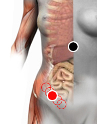

Bartonella
Par
cardias - apéndice
iliaco - cápsula renal

Generalidades:
Síntomas gastrointestinales, fiebre, náuseas, dolor abdominal, distensión, dispepsia
Transmisión
Por frutas con cáscara (manzana), garrapatas, pulgas, moscas de arena, mosquitos, ratas, gatos, perros, etc.